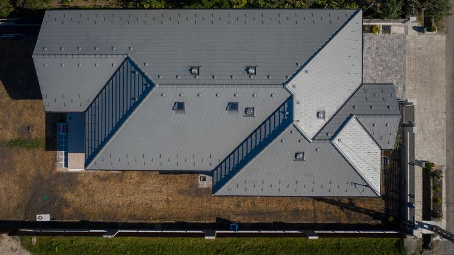
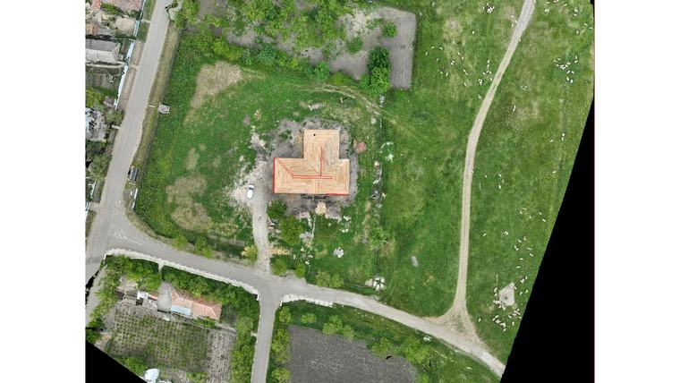
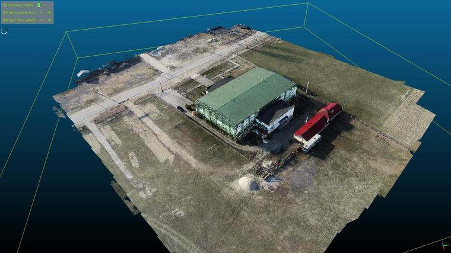
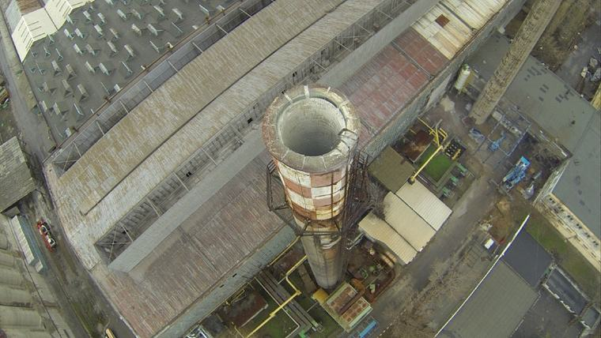
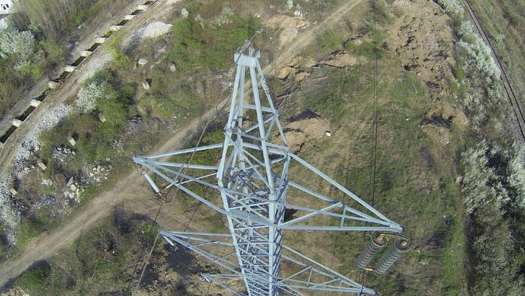
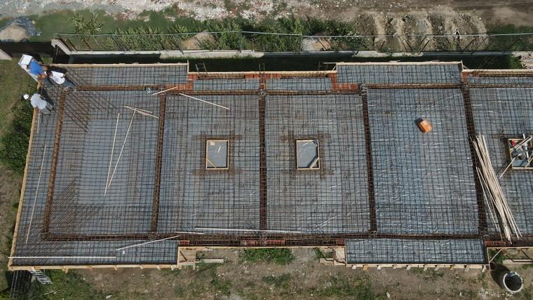

Vedem acoperișul, coșul de fum sau fațada fără schelă, nacelă și oprirea lucrului. Iar acolo unde trebuie măsurat, nu doar privit, zborul se transformă în ortofotoplan, model 3D și volume calculate.
Ce putem face
Inspecție vizuală, fără acces pe înălțime
Acoperișuri și învelitori — țigle sparte sau deplasate, tablă desprinsă, șorțuri și racorduri, jgheaburi înfundate;
Fațade — fisuri, tencuială desprinsă, termosistem umflat, rosturi degradate, elemente care stau să cadă;
Coșuri de fum, turnuri, silozuri, castele de apă — locuri unde urcarea unui om înseamnă schelă, autorizație de lucru la înălțime și risc;
Structuri înalte în execuție — verificarea etajelor superioare înainte de demontarea schelei;
Constatări după evenimente — furtună, grindină, incendiu, infiltrații: dovadă fotografică datată, utilă și la dosarul de daună.
Măsurători și ridicări
Ortofotoplan georeferențiat — o hartă a terenului la scară, din care se măsoară direct distanțe și suprafețe;
Model 3D și nor de puncte pentru teren și construcții;
Curbe de nivel și model digital al terenului, pentru sistematizare verticală;
Calcul de volume — săpături, umpluturi, halde de pământ, stocuri de agregate, cu raport de calcul;
Urmărirea stadiului lucrărilor — zboruri repetate, la aceleași puncte, care arată progresul lună de lună și susțin situațiile de lucrări;
Documentare pentru cartea tehnică și pentru recepție.
Termografie din aer
Pierderi de căldură pe anvelopă, văzute pe toată fațada dintr-o singură trecere, inclusiv la etajele superioare;
Terase și acoperișuri — zone cu izolație umezită, care rețin căldura și se văd clar în infraroșu;
Panouri fotovoltaice — celule defecte și puncte fierbinți, pe parcuri întregi, mult mai repede decât la sol;
Trasee termice îngropate și scăpări pe rețele, acolo unde diferența de temperatură ajunge la suprafață.
Măsurători și modele
Rezultate din zboruri proprii — nu ilustrații, ci exact ce primește beneficiarul.

Acoperiș fotografiat vertical. Din imagine se măsoară direct suprafețe și lungimi, fără schelă și fără urcare.

Ortofotoplan georeferențiat, cu conturul construcției trasat peste el. O hartă la scară, din care ies cantitățile.

Nor de puncte și model 3D al unei hale și al terenului. Se rotește, se secționează și se măsoară în orice direcție.
Inspecție fără urcare

Gura unui coș de fum industrial, văzută de deasupra. Se disting cărămida degradată, platforma și scara. Fără schelă, fără alpinist, fără oprirea lucrului.

Vârful unui stâlp de înaltă tensiune. Zăbrelele, îmbinările și izolatorii se văd de aproape, la o distanță de siguranță față de conductori.

Armătura unei plăci, fotografiată vertical înainte de turnare. Zboruri repetate din același punct arată stadiul lună de lună și susțin situațiile de lucrări.
Cu ce zburăm
DJI Mavic 3E — pentru măsurători
Cameră de 20 MP cu senzor 4/3 și obturator mecanic, care îngheață imaginea fără deformare la viteză — condiția ca fotogrammetria să iasă corect. Modul RTK pentru poziționare de ordinul centimetrilor, fără să fie nevoie de puncte de control marcate pe teren la fiecare zbor. În plus, o cameră tele cu zoom, pentru detaliu de aproape fără să apropii aparatul de construcție.
DJI Matrice 30T — pentru termografie
Cameră termică radiometrică 640×512, cu măsurarea temperaturii în orice punct al imaginii, alarme de temperatură, palete de culori și izoterme pentru scoaterea în evidență a punctelor fierbinți. Alături, o cameră vizibilă de mare rezoluție și un tele cu zoom, ca fiecare termogramă să aibă perechea ei în lumină normală, plus un telemetru laser care dă distanța până la punctul vizat.
Ce primiți
Raport scris, cu fotografiile relevante și interpretarea lor — ce se vede și ce înseamnă;
Fotografiile la rezoluție întreagă, organizate pe zone;
La ridicări: ortofotoplanul georeferențiat, modelul 3D, curbele de nivel și raportul de volume, în formatele uzuale de CAD și GIS;
La termografie: termogramele perechi cu imaginea vizibilă, plus condițiile de măsurare;
Filmare, acolo unde ajută la înțelegerea situației.
Zborurile se fac în regulile aviației civile. Operatorul este înregistrat la
Autoritatea Aeronautică Civilă Română, pilotul are certificat de competență, iar în zonele
geografice cu restricții — apropierea aeroporturilor, obiective militare, zone interzise — se
zboară numai cu autorizația cerută. Nu acceptăm zboruri care ar încălca aceste reguli, oricât
de urgentă ar fi lucrarea. Imaginile se folosesc doar pentru scopul contractat.
Când merită
Aveți o problemă la acoperiș și oferta pentru schelă costă mai mult decât inspecția;
Cumpărați o hală sau o clădire și vreți să vedeți învelitoarea înainte de semnare;
Trebuie să justificați cantități de terasamente și nu vreți discuții cu executantul;
Sunteți în litigiu și aveți nevoie de o constatare vizuală, datată și greu de contestat;
Urmăriți o investiție de la distanță și vreți un raport lunar cu stadiul real;
Aveți un parc fotovoltaic și verificarea panou cu panou, de la sol, ar dura zile.
Ce trebuie să ne trimiteți
Adresa exactă sau coordonatele amplasamentului;
Ce anume vă interesează: inspecție vizuală, măsurători sau termografie;
Suprafața aproximativă, la ridicări topografice;
Înălțimea construcției și dacă există obstacole în jur — linii electrice, copaci, alte clădiri;
Dacă amplasamentul este în apropierea unui aeroport, a unei unități militare sau a altei zone cu restricții;
Termenul până la care aveți nevoie de raport.
Pentru clădiri, inspecția din aer se completează bine cu
inspecția termografică de la sol, care ajunge acolo unde drona nu
are unghi: interioare, subsoluri, tablouri electrice.
Termografia de anvelopă, inclusiv din aer, cere sezon rece și o diferență de temperatură între
interior și exterior. Zborul depinde de vânt, precipitații și vizibilitate; la vânt puternic
reprogramăm, fiindcă imaginile ies inutilizabile și riscul crește.